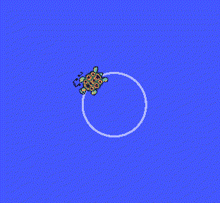

Atividade Complementar - Introdução ao Linux
Infraestrutura Necessária
- SSD disponibilizado
- laptop, desktop, com acesso a Internet
- Ter realizado os passos deste tutorial
Linux
O desenvolvimento do Linux é um dos exemplos mais proeminentes de colaboração de software livre e de código aberto. O código fonte pode ser usado, modificado e distribuído, com fins comercias ou não, por toda a comunidade, respeitando as licenças.
Normalmente, o Linux é utilizado como plataforma de desenvolvimento em sistemas embarcados

A distribuição linux ou Sistema Operacional que vamos usar será o Ubuntu. Existem diversas distribuições mas não será o nosso foco.
É fácil achar maiores informações online, deixamos alguns links aqui mas não se restrinja apenas a eles: Linux Fundation, Distribuições Linux, Manjaro, Ubuntu.
{kind=link}
Conhecendo e utilizando o Terminal
O Terminal do Linux é uma ferramenta que facilita a manipulação do sistema, interpretando os comandos do usuário, fazendo a ponte com o hardware do seu computador
Abrindo o terminal
A forma mais facil de abrir o terminal é atraves do atalho:
Ctrl + Alt + T
Neste momento nos deparamos com a janela do terminal aberta no ambiente do usuário (home ou ~) pronta para receber os primeiros comandos.

Comando "apt"
APT é um conjunto de ferramentas usadas pelo Linux para administrar os pacotes .deb de forma automática, é possível instalar, atualizar e remover programas e suas dependências via apt;
Atualizar a "lista de pacotes"
Com o comando abaixo, usamos o apt para atualizar todos os programas instalados com essa ferramenta;
sudo apt update
Atualiza pacotes "já instalados"
Com o comando abaixo, é possível baixar e instalar a versão mais atual de todos os programas instalados anteriormente via apt;
sudo apt upgrade
Instalar pacotes via apt
Com este comando, usamos o apt para encontrar, baixar e instalar o .deb do programa que queremos instalar no nosso computador;
sudo apt install -y geogebra
Após finalizar a instalação do programa, podemos executar a nova ferramenta, apenas digitando o nome dela no terminal.
geogebra
Remover pacotes via apt
Tambem é possivel desinstalar um programa que foi baixado via apt, basta usar o comando remove, como no exemplo abaixo;
sudo apt remove geogebra
Instalar pacotes via Ubuntu Sftware

Podemos instalar pacotes via Ubuntu Sftware, basta clicar em Show Applications, no canto inferior direito da tela, e digitar Ubuntu Sftware na janela de busca;
Agora clique na lupinha e digite o programa que deseja instalar;
(https://github.com/liciascl/Linuxbasico/blob/master/docs-src/img/find_geogebra.png)
{kind=link}
Clique no software escolhido, e depois, clique no botão Instalar;
 (https://github.com/liciascl/Linuxbasico/blob/master/docs-src/img/install_geogebra.png)
(https://github.com/liciascl/Linuxbasico/blob/master/docs-src/img/install_geogebra.png)
{kind=link}
Terminada a instalação, basta clicar no botão Launch para executar o programa, ou Remove para desinstalar;
(https://github.com/liciascl/Linuxbasico/blob/master/docs-src/img/launch_geogebra.png)
{kind=link}
Um poquinho de GitHub
Antes começar a falar dos comandos do terminal, vamos configurar as nossas credenciais do GitHub, para isso copie os comandos abaixo e cole no terminal:
git config --global user.name "Seu Nome"
git config --global user.email "seunome@email.com"
Se você está tentou usar Ctrl + C no texto e Ctrl + V no terminal, talvez não tenha dado muito certo.
Para copiar e colar no terminal use:
Ctrl + Shift + C (Copiar) e Ctrl + Shift + V (Colar).
Sabendo disso, faça a configuração das suas credenciais no git copiando e colando o comando no terminal.
Para verificar se foi funcionou, digite:
git config user.name
git config user.email
Este comando grava as suas credenciais do GitHub, para facilitar a sua vida na hora de enviar seus arquivos locais para o repositório remoto.
Navegando entre diretorios e arquivos
De forma bem simplificada, podemos dizer que o sistema Linux possui 2 elementos principais: pastas e arquivos. Os arquivos armazenam dados (txt, py...) e as pastas tambem chamadas de diretórios, armazenam e organizam os arquivos. Sabendo disso é importante saber navegar entre os diretórios para encontrar os arquivos.

{kind=link}
Comando "cd"
O comando cd é um dos comandos mais utilizados no terminal do Linux isso porque ele permite que acessemos um diretório especifico. Vamos acessar o nosso repositorio de Elementos de Sistemas, e atualizar ele via git.
cd Z01.1
git pull
É uma boa prática manter os seus repositórios Git sempre atualizados, antes de começar a trabalhar, não esqueça de dar um git pull, para ter certeza de que está trabalhando com a ultima versão dos arquivos no seu repositório!
Feita a atualização, vamos instalar uma ferramenta que permite visualizar toda a estrutaras de árvore da pasta,
sudo apt install tree
Agora digite o comando para visualizar a árvore do repositório de Elementos de Sistemas:
tree -d -L 4
Esta ferramenta é útil para te ajudar a navegar de forma mais eficiente dentro do sistema, se você não sabe aonde determinado repositório está exatamente, é possivel consultar a árvore para localizar visualmente.
os paramentros -d -L 2 indica que que queremos listar (-L )até o quarto (4) nível na hierarquia de pastas, apenas as pastas (-d)
para listar tudo digite apenas tree.
Na pasta Z01.1 -> Projetos -> B-LogicaCombinacional -> src -> rtl estão os arquivos .hdl da ultima aula, vamos dar uma olhada neles.
cd Projetos
cd B-LogicaCombinacional
cd src
cd rtl
ou par ir direto para este diretorio digite:
cd Projetos/B-LogicaCombinacional/src/rtl
Dica:. Se estiver com preguiça de digitar o caminho completo, digite apenas o começo do comando e use a tecla TAB para auto-completar.
Para acessar o diretório anterior podemos digitar:
cd ..
Comando "pwd"
Podemos verificar o diretório que estamos digitanto:
pwd
Para acessar o diretório home, basta digitar;
cd
Toda vez que abrimos um novo terminal, ele é inicializado na home do usuário.
Comando "ls"
O comando ls é utilizado pra visualizar o conteúdo de um diretório.
ls
Visualização de arquivos e pastas ocultos
O comando "ls" sozinho não exibe arquivos ocultos, que são arquivos e pastas que começam com ".". Durante as aulas de robotica teremos que editar um arquivo oculto chamado ".bashrc", no momento precisamos apenas saber que este arquivo se encontra na home do usuario ~ e que após editado precisamos executar o source ~/.bashrc ou feche o terminal e abra um novo para recarregar as atualizações do arquivo. digite:
cd ~
ls -a
ou para listar informações mais detalhadas:
ls -la
ou simplismente:
ll
cd ~
code .bashrc
source .bashrc
Comando "mkdir"
Para criar um novo diretório no ambiente em que você está, basta digitar o comando a seguir;
mkdir nome_da_pasta
Para criar um novo diretório em um local especifico, basta especificar o caminho que o diretório deverá ser criado;
Dica:. Você sempre pode usar a tecla TAB para dar auto-completar os comandos.
mkdir /home/borg/Documents/nome_da_pasta
ou
mkdir ~/Documents/nome_da_pasta
Comando "touch"
O comando touch cria arquivos vazios, na extensão que você definir;
touch teste.py
touch testando_outra_extensao.txt
O comando > funciona exatamente como o touch:
> outro_teste.py
> mais_um_teste.txt
Se você tentar abrir um arquivo que não existe, usando um editor de texto pelo terminal, o sistema cria o arquivo pra você, observe;
nano usando_o_nano.py
code usando_o_vscode.md
gedit o_bloco_de_notas.txt
Comando "cp"
Para copiar arquivos e diretorios, basta digitar:
> meu_programa_python.py
cp -R meu_programa_python.py /home/borg/Documents/
No exemplo acima foi criado um arquivo chamado meu_programa_python.py uma copia do arquivo "nome1.py" dentro do diretório pasta1.
Comando "mv"
Para mover arquivos e diretorios, o famoso Ctrl + X / Ctrl + V, basta digitar:
mv o_bloco_de_notas.txt /home/borg/Documents/
No exemplo acima o arquivo "o_bloco_de_notas.txt" foi movido para dentro do diretório Documents (recortado e colado).
Comando "mv"
O comando mv tambem serve tanto para mover, com para renomear arquivos e diretorios:
mkdir pastinha
mv pastinha nova_pastinha
Atenção!! Cuidado para não sobrescrever arquivos e pastas atuais na hora de executar estes comandos.
Comando "rm"
Para excluir arquivos e diretórios, o famoso Shift+Del, basta digitar:
rm -rf nova_pastinha
Atenção!! Cuidado!!!! Arquivos e pastas são apagados permanentemente, não vão para lixeira. No caso de diretórios, apaga o diretório e tudo que está dentro dele.
Super Usuário
Comando "sudo"
Por questões de seguraça, o Linux trabalha com permissões de usuários e para determinados arquivos ou comandos apenas o usuario administrador (root) pode executar. A titulo de curiosidade, "sudo" significa Super User DO. Quando executar comandos com sudo, será necessário informar a senha.
Comando "chmod"
As permissões servem para determinar se um usuario ou grupo terá permissões para ler, gravar, executar. Existem diversas configurações possiveis e a que mais utilizamos dá a permissão de execução a um codigo qualquer, como um python, por exemplo;
touch teste.py
chmod a+x teste.py
A concatenação de a+x significa que estamos permitindo para todos (a = all) usuarios e grupos executem (x = execution) o teste.py
Editando arquivos
Existem várias ferramentas para edição de texto, de um modo geral, podemos dizer que existem 2 tipos grupos principais, os que rodam direto no console (terminal) e os que possuem uma interface gráfica.
Editor nano
O nano é um editor do modo console, ou seja, abre no proprio terminal.

Abrir
Digite no terminal nano e o nome do arquivo com a extensão, caso não exista um arquivo com esse nome um novo arquivo será criado.
nano nano.md
nano nano.txt
Localizar palavra
Para fazer uma busca no texto pressione Ctrl + W, digite a palavra e aperte Enter.
Salvar e Sair
Para salvar, precione Ctrl + S. Para sair Ctrl + X. Para sair sem salvar alteraçes, Ctrl + X e N.
Editor gedit
Muito parecido com o famoso bloco de notas do Windows.
Abrir
Digite no terminal gedit e o nome do arquivo com a extensão, caso não exista um arquivo com esse nome um novo arquivo será criado.
gedit roda_tartaruga.py
gedit roda_tartaruga.md
Localizar palavra
Para fazer uma busca no texto pressione Ctrl + F, digite a palavra e tecle Enter.
Salvar e Sair
Para salvar e sair, pressione Ctrl + S ou clique em salvar para salvar e para sair Alt + F4
Editor vscode
O editor vscode é uma ferramenta que possui mais recursos que auxiliam no desenvimento de codigo.

Abrir
Digite no terminal code e o nome do arquivo com a extensão, caso não exista um arquivo com esse nome um novo arquivo será criado.
code roda_tartaruga.py
Localizar palavra
Para fazer uma busca no texto pressione Ctrl + F, digite a palavra e tecle Enter.
Salvar e Sair
Para salvar e sair, pressione Ctrl + S ou clique em salvar para salvar e para sair Alt + F4
BONUS
Comando úteis para verificar informações do sistema, encontrar bugs, e matar programas travados;
Informações dos dispositivos conectados na USB
Se você não tem certeza se o dispositivo conectado a sua porta USB foi reconhecido, use este comando e verifique o log do sistema;
lsusb
Informações dos dispositivos conectados na USB
Se você não tem certeza se o dispositivo conectado a sua porta PCI foi reconhecido, use este comando e verifique o log do sistema;
lspci
O programa travou, e agora?
Para destravar uma tela, use "xkill" e clique na tela com o mouse.
xkill
Para matar um processo, digite o comando abaixo, e o nome do software que deseja assassinar;
pkill terminal
Preparamos um desafio para você, navega até a proxima página e divirta-se com a tartaruga do ROS
